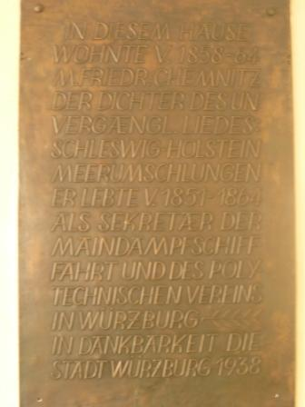

„In diesem Hause wohnte von 1858-1864 Matthäus Friedrich Chemnitz, der Dichter des unvergänglichen Liedes: Schleswig-Holstein meerumschlungen. Er lebte von 1851-1864 als Sekretär der Maindampfschiffahrt und des polytechnischen Vereins in Würzburg. In Dankbarkeit die Stadt Würzburg 1938.“
So steht’s geschrieben in der Maulhardgasse, hinter dem Kaufhof.

Wie man kürzlich nachlesen konnte, möchte Würzburgs Kulturreferent Muchtar Al Ghusain Würzburgs in Stein gehauene Opferkultstätten „in ihren Kontext stellen“, „den Diskurs suchen“. Ich zöge die diskursverweigernde Schlagkraft einer Abrissbirne vor.
Wie schwierig es jedoch wäre, überhaupt etwas von Würzburgs Artefakten zu verschonen, wenn man die Verehrung des nationalistischen Opfers aus der Welt schaffen wollte, verdeutlicht die Tafel zu Ehren des Herren Matthäus Friedrich Chemnitz: Schleswig-Holstein meerumschlungen ist genauso wie das Lied der Deutschen ein Kind der vormärz’schen Kriegsgeilheit mit ihrer antidänischen und vor allem antifranzösischen Stoßrichtung. Halten wir uns weiter an Herrn Al Ghusains Intention: In welchem Kontext würdigte die Stadt Würzburg 1938 Herrn Chemnitz? Würzburgs damaliger Oberbürgermeister Theo Memmel, der noch am 02. April 1945 verlauten ließ, dass man jeden erhänge, der für den Feind arbeite, hat die Tafel sicher nicht wegen Chemnitzs Verdiensten um die Mainschifffahrt anbringen lassen. Es handelt sich schlicht und einfach um ein noch heute gehegtes und gepflegtes Nazidenkmal.
Der Studentenstein, die Kriegerdenkmäler, all die Kultstätten der nationalen Huldigung, was bewirkt es, sie in ihren historischen Kontext zu stellen? Das Vergangene und das Gegenwärtige werden auf künstliche Weise entknotet. Vergangenes ist vergangen, obwohl es auch auf die Gegenwart ihre Schatten wirft, sein Geist weiter existiert.
Und die Geschichte des nationalen Opfers lebt weiter. Ausgerechnet auf der Homepage der Stadt Würzburg, ausgerechnet bezüglich des Herren Nazi-Oberbürgermeisters Theo Memmel. Unter der Rubrik Stadthistorische Streiflichter erfährt man: „Im Gegensatz zu Gauleiter Dr. Otto Hellmuth, der sich bereits vor der Entscheidung in Richtung Nürnberg abgesetzt hatte, blieb Oberbürgermeister Theo Memmel in Würzburg und kämpfte mit einem von drei Volkssturmstoßtrupps in der Randersackerer Straße aufopfernd aber sinnlos gegen die überlegenen Angreifer.“ Welch schön gezeichnetes Heldenepos! Gauleiter Dr. Otto Hellmuth, der feige Verräter, flüchtete sich nach Nürnberg, Herr Memmel aber, der scheiternde Held, setzte sich aufopferungsvoll für seine Stadt ein. Liest man diesen Text, verwundert es fast, dass man Herrn Memmel nicht posthum den Kulturpreis der Stadt Würzburg verliehen hat.
Die Verehrung des nationalen Opfers lebt weiter, auf der Homepage der Stadt Würzburg, bei jedem Volkstrauertag, bei jeder Kranzniederlegung des Intercorporativen Convents am Studentenstein. Denkmäler in ihren historischen Kontext zu stellen, solange der Mythos des Opfers für die Volksgemeinschaft Realität besitzt, bedeutet, die geistigen Abgründe der Gegenwart totzuschweigen.